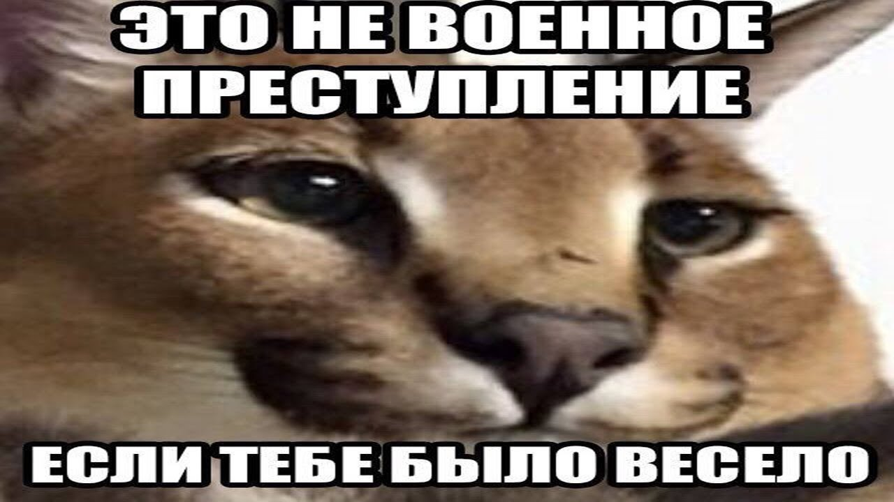
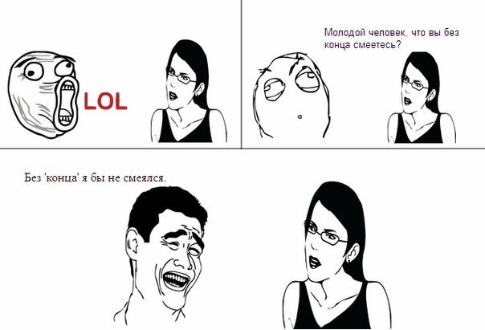
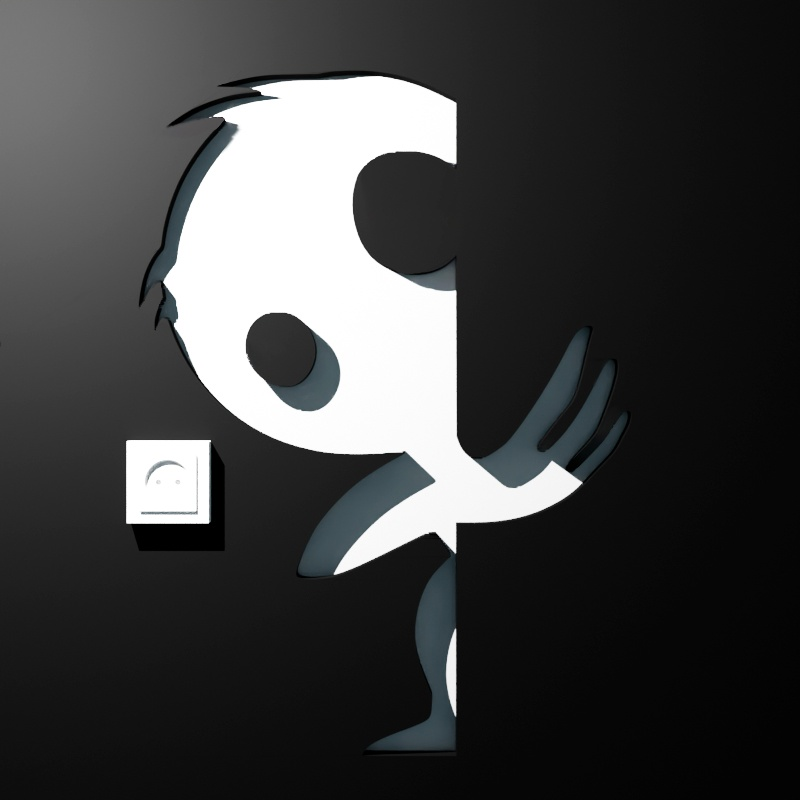
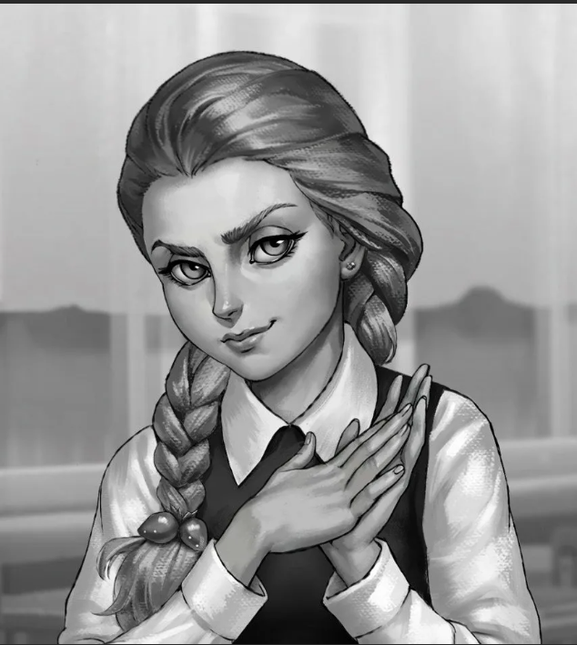

Ну вот и подходит к концу 2017 год.
Для всех он был разный. Для кого-то он был очень удачным, для кого-то не таким успешным.
Кто-то что-то приобрёл, нашёл новых друзей, а может и старых, которых давно не видел.
Кто-то встретил свою вторую половинку, кто-то нашёл родных и близких, кому-то может, повезло в лотерее.
Кто-то, возможно, ничего подобного не приобрёл, но все равно он счастлив, а может, и нет…
В любом случае — всё плохое уже позади, а чтобы в Новом Году исполнилось задуманное — надо сильно желать этого, — ведь мысль материальна!
Пусть все тревоги и печали останутся в прошлом году!!!
А сердце и душа будут открыты для самого Светлого и Доброго!!!


 Скачать
Скачать
А где прошла ты... Там упала звезда, там светила луна и играла волна. И все цитаты... Я забрал у тебя, и теперь я как ты или ты как и я...

